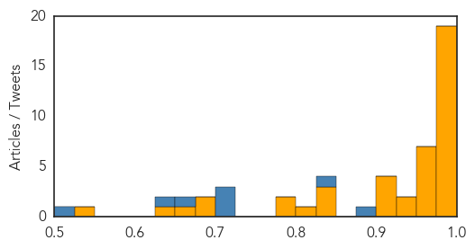
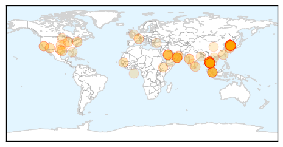

Ebola
30-Day Web Trend
0 alerts, 0 warnings

30-Day Twitter Trend
0 alerts, 0 warnings

Article Locations

Article Confidences
Top Articles:
- 1.000
- Obstacles to Ending Ebola Remain in West Africa
- 1.000
- MERS Will Be the Next Big Deadly Disease You Are Going to Worry About (That You Have Not Heard of Yet)
- 0.999
- Genome Studies Show How Ebola Spread Initially
- 0.998
- Genome studies show how Ebola spread initially
- 0.998
- Health ministry tracks 66 at risk of Mers
- 0.998
- Mers Situation Under Control, Says Prayut
- 0.997
- Traveling woes of Liberians persist – after Ebola epidemic subsides
- 0.997
- South Korea reports no new cases in MERS outbreak
- 0.997
- Thailand Has Been Struck by the Incurable MERS Virus
- 0.996
- No more cases of MERS, says health minister
- 0.995
- N. Korea says it has 'cure' for Ebola, AIDS
- 0.995
- N. Korea says it has 'cure' for Ebola, AIDS
- 0.992
- North Korea Claims to Have Discovered Cure for MERS, Ebola and AIDS, Says Deadly Diseases Can Be ''Easily Treated''
- 0.986
- As MERS Spreads, Gov’t Says It’s Prepared
- 0.985
- Did the Ancient Greeks Get Ebola?
- 0.982
- North Korea claims universal cure for MERS, Ebola, AIDS, cancer, morning sickness, 'harm from the use of computers'
- 0.981
- Tekmira Stops Testing Ebola Drug In Sierra Leone
- 0.981
- Vaccine trial won’t cause Ebola
- 0.980
- North Korea's miracle 'cure' for MERS, Ebola, AIDS
- 0.973
- North Korea says it has ‘cure’ for MERS, Ebola, AIDS
- 0.968
- N. Koreans in Middle East Told to Stay Put Over MERS Fears
- 0.967
- N Koreans in Middle East Told to Stay Put Over MERS Fears
- 0.966
- North Korea Claims To Have Found Cure For MERS, Ebola, SARS and AIDS; Is It True?
- 0.965
- Obscure North Korea whips up wonder drugs for MERS, Ebola, SARS, and AIDS
- 0.963
- Canadian Tekmira Pharmaceuticals company halts Ebola drug testing in Sierra Leone
- 0.951
- North Korea says it has 'cure' for MERS, Ebola, Aids
- 0.948
- Wonder drug can cure Ebola, AIDS, MERS & SARS
- 0.928
- North Korea's new drug claims to beat 'deadly ' MERS, Ebola, Sars, AIDS
- 0.922
- RI Dept. of Health no longer monitoring travelers from Liberia for ebola
- 0.908
- North Korea's new drug claims to beat 'deadly ' MERS, Ebola, Sars, AIDS
- 0.907
- Canadian Ebola drug trial stopped
- 0.903
- North Korea Claims To Cure AIDS, Ebola, Cancer And More With New Super Drug
- 0.848
- Ebola gone but not Liberia stigma
- 0.846
- NY Daily News: North Korea says it's discovered cure for cancer
- 0.843
- Sierra Leone doubles up efforts to achieve zero new Ebola cases by mid-july
- 0.819
- North Korea says it can cure MERS (and a whole bunch of other things)
- 0.791
- Overview of health news and events as at June 20, 2015
- 0.791
- Ebola has seriously affected the development of teenage girls in Sierra Leone
- 0.697
- Ghana: Ebola Trials will not be compromised- Clinical researches
- 0.692
- Health Highlights: June 20, 2015
- 0.675
- Health Highlights
- 0.634
- ACC Romances with Guild of Editors
- 0.536
- Presidential Powers to be reduced – Why?
Top Tweets:
- 0.970
- RI Dept. of Health no longer monitoring travelers from Liberia for ebola - WPRI 12 Eyewitness News http://t.co/nqe5HJOHvF ebola EVD
- 0.963
- Vaccine trial won't cause Ebola - WHO - Graphic Online http://t.co/AgnCASp1Gh ebola EVD
- 0.894
- Avian Flu Diary: Clinical Trial Of Ebola Drug TKM-Ebola Halted, No Therapeutic Benefit http://t.co/KBnbtbSvxt
- 0.884
- North Korea Claims to Have Discovered Cure for MERS, Ebola and AIDS, Says ... - E! Online http://t.co/EEcqypwAuO ebola EVD
- 0.869
- Genome Studies Show How Ebola Spread Initially - New York Times http://t.co/LjneBFI5gU ebola EVD
- 0.856
- 'Emerging Diseases' takes on MERS, Ebola, more - http://t.co/NXdg7rTQZC http://t.co/QIXnGAmi0h ebola EVD
- 0.846
- In Guinea, @AfDB_Group is building 21 health centres to specialize in the treatment of infectious diseases, incl. Ebola. EbolaResponse
- 0.844
- Company Stops Testing of Ebola Drug in Sierra Leone - http://t.co/FMQyohd10H http://t.co/dRrl8vUqBv ebola EVD
- 0.776
- RI Dept. of Health no longer monitoring travelers from Liberia for ebola - WPRI 12 Eyewitness News http://t.co/loOZP4fz8e
- 0.776
- Leaders from Sierra Leone and Guinea visit border to reinvigorate Ebola response http://t.co/0odZG5b4mf
- 0.722
- North Korea's New Miracle Drug Cures HIV and Ebola, Says North Korea - Gawker http://t.co/JR8QyM38vS ebola EVD
- 0.660
- 660 lab samples were tested for Ebola in Guinea from 7-14 June -> 4% tested positive. EbolaResponse
- 0.647
- RT: Why Ebola Won't Go Away In West Africa http://t.co/bBh0CWnxjS
Unknown
30-Day Web Trend
13 alerts, 4 warnings

30-Day Twitter Trend
7 alerts, 1 warnings

Article Locations
Article Confidences

Top Articles:
- 1.000
- WHO chief voices optimism over S. Korea MERS outbreak
- 0.999
- Thailand confirms first MERS case as virus spreads in Asia
- 0.999
- South Korea Reports No New MERS Cases
- 0.999
- No new MERS cases for first time in 16 days
- 0.999
- Coping With Outbreaks of MERS
- 0.999
- S. Korea reports no new MERS cases for first time in 16 days
- 0.999
- Korea reports no new MERS cases for first time in 16 days
- 0.999
- South Korea reports no new MERS cases for first time in 16 days
- 0.999
- South Korea reports no new MERS cases for first time in 16 days
- 0.999
- South Korea Reports No New MERS Cases
- 0.999
- Bangkok's Bumrungrad Hospital treated Thailand's first MERS case
- 0.999
- South Korea reports no new MERS infections
- 0.998
- South Korea says MERS outbreak shows signs of subsiding
- 0.998
- S. Korea reports no new MERS cases for first time in 16 days
- 0.998
- Thailand confirms its first case of deadly MERS virus
- 0.998
- Thailand says 175 exposed to MERS patient; South Korea reports no new case
- 0.997
- Thailand says 175 exposed to MERS patient, news, Health News, AsiaOne YourHealth
- 0.997
- No New MERS Cases for South Korea and Thailand on Saturday
- 0.997
- Boost for South Korea in MERS battle
- 0.997
- No daily MERS cases, deaths added in S. Korea
- 0.997
- 175 exposed to Thailand's only MERS case
- 0.997
- Thailand reports first confirmed case of deadly MERS virus
- 0.997
- Boost for South Korea in MERS battle
- 0.997
- Ho Chi Minh City sets up 33 mobile teams to cope with MERS
- 0.997
- Thailand says 175 exposed to MERS patient; South Korea reports no new case
- 0.997
- Thailand says 175 exposed to MERS patient; S.Korea reports no new case
- 0.997
- S Korea says MERS outbreak shows signs of subsiding
- 0.996
- S Korea says MERS outbreak shows signs of subsiding
- 0.996
- S. Korea reports no new MERS cases for first time in 16 days
- 0.995
- Thailand says 175 people had exposure to its MERS case
- 0.994
- Thailand says 175 people had exposure to its MERS case
- 0.993
- Omani MERS patient's relatives tested for virus in Thailand
- 0.993
- Slinking Toward Retirement
- 0.992
- Boost for South Korea in MERS battle
- 0.992
- South Korea, Thailand Report No New MERS Cases : The Two-Way : NPR
- 0.992
- South Korea, Thailand Report No New MERS Cases
- 0.991
- Thailand says 175 people had exposure to its MERS case
- 0.990
- Four days to confirm MERS - Regional
- 0.990
- We need to draw up a new quarantine system to better cope with MERS
- 0.985
- Thailand confident of preventing mass MERS outbreak
- 0.985
- Thailand Took Four Days to Confirm First MERS Case; Scores Monitored
- 0.984
- First MERS Case In Thailand Confirmed
- 0.983
- DISCUSSING MERS VIRUS
- 0.982
- MERS Thailand – 175 people exposed to MERS – Says Thailand Health Ministry
- 0.979
- 175 people exposed to MERS
- 0.978
- Gulf Daily News World News Relatives of Omani Mers victim tested
- 0.978
- Thailand MERS Case, Health Public Minister Confirms
- 0.975
- Bangkok's Bumrungrad Hospital quarantines 58 staff , Others news, Health News, AsiaOne YourHealth
- 0.959
- Read Health News & Articles at TheHealthSite.com
- 0.957
- Thailand: 175 Exposed to MERS Case
Showing top 50 articles...
Top Tweets:
- 0.897
- Acabo de ver un Snapchat desde Hong Kong y se escucha reguetón en la parte de atrás.